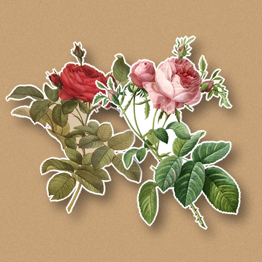

<- all projects

Paper Garden Maker
Android, PC
Volume
Live
Cut the flowers. Keep the memories.
Grandma Rose is moving out of the house she gardened in for sixty years, and the garden cannot come with her. So you make it for her in paper, one album page for every memory. Every flower is a real botanical print by Pierre-Joseph Redouté. Read what Rose asks for, trace the dotted line to cut each flower from its plate, then arrange your cutouts in a layered shadowbox, moving, turning, sizing, flipping and tinting them before you press and photograph the page. 36 album pages in 12 chapters of her life, 81 Redouté flowers to collect and a daily florist order from a neighbour.